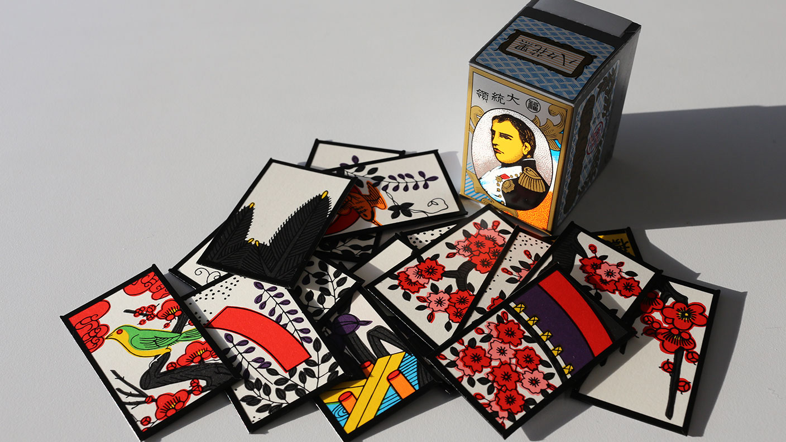

Nintendo was founded as Yamauchi Nintendo on September 23, 1889. Based in Kyoto Japan, the business produced and marketed hanafuda. These were cards that were all handmade, this soon began to grow in popularity and Yamauchi had to hire assistants to mass-produce cards to keep up with the demand.
1949-1965In 1949, Yamauchis grandson, Hiroshi would take over the company after Yamauchi passed away. In 1953, Nintendo became the first company in Japan to produce playing cards from plastic. In 1959, Nintendo struck a deal with Disney to allow the use of Disney's characters on Nintendo's playing cards.
 1966-1972Nintendo struggled to survive in the Japanese toy industry, it was still small at the time, and it was dominated by larger brands such as Bandai and Tomy. The life cycle of toys was generally very short and thus the company always had to come up with new designs for new products.
1972-presentNintendo began to dabble in arcade games and also in consumer handheld video games. In 1980, Nintendo created the Game and Watch series which lasted up until 1991. After the video game crash of 1983, Nintendo began to export its games into the United States with only one competitor, Sega. By the end of 1986, Nintendo would release the NES, a system regarded as saving the video game industry in the states. Without it, there might not be a games market in the US today. Today Nintendo continues on with the Nintendo Switch which has been selling really well and may be on pace to outsell the Wii towards the end of its life cycle.